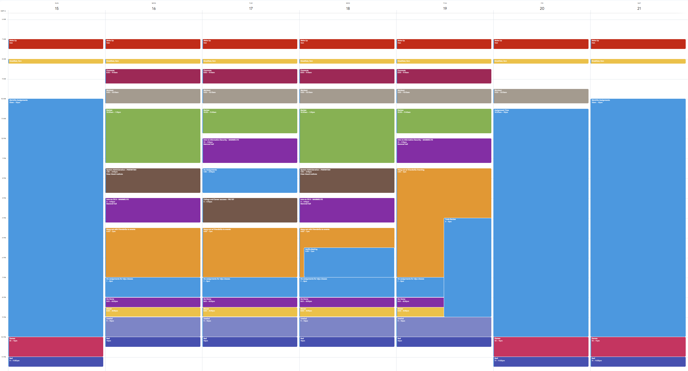

Time Management Toolkit: Controlling Your Week
Step 2 in Class Walkthrough • Systems to protect your focus and eliminate decision fatigue.
When you have a 40-minute drive, a job, workout goals, and heavy college classes, free time does not happen on its own. You have to build a system that protects your focus and guarantees your rest.
1. Google Calendar: The Fixed Routine & Study Blocks
Before this semester, I relied entirely on mental notes to keep track of my commitments. In high school, that worked because bells rang every 50 minutes and you were physically directed where to be. In college, that lack of structure caused me to be late to appointments, miss review sessions, and forget where I needed to be next.
In CIST 1010 (College and Career Success), we explored digital scheduling and time audits. I set up a dedicated, color-coded Google Calendar that completely turned my habits around:
- Class Time Blocks: Exact lectures and lab sections (CSCI 1620, Calculus, CIST 1010) plotted with classroom locations and parking buffer times.
- Dedicated Study Appointments: Rather than saying "I'll study tonight," I schedule dedicated 60-to-90 minute blocks on campus (e.g., Tuesday 1:30 PM – 3:00 PM at Criss Library). I treat these blocks like mandatory shifts.
- Commute & Gym Windows: The 40-minute drive and early morning workouts are explicitly blocked out so I never schedule a study session when I am supposed to be driving on I-80.
- Automated 15-Minute Notifications: Phone and watch alerts ensure I leave my study desk with enough time to walk across campus and never sprint into a classroom late.

Specific Source: CIST 1010 (College and Career Success).
What it taught me: It taught me to keep a set schedule and routine so I am not late to everything like I used to be. Notifications also make sure I don't forget somewhere I need to be.
When your schedule lives solely in your head, you expend immense cognitive energy constantly worrying about what you might be forgetting. By offloading every commitment into Google Calendar, your brain is freed to focus purely on learning. Time-blocking also creates clear boundaries between when it is time to lock in and when it is genuinely time to rest without guilt.
2. Phone "Study Mode": Protecting Deep Focus
Smartphones are designed by behavioral psychologists to hijack attention. In high school, I would study with my phone buzzing beside my notebook, answering group chats and checking notifications every four minutes. I thought I was "multitasking," but in reality, every buzz reset my attention span.
During the first month of classes, a friend shared a simple yet game-changing technique: setting up a customized "Study Mode" / Do Not Disturb profile on the phone.
Here is the exact configuration I use:
- Whitelist Immediate Family Only: Only emergency phone calls and text messages from my immediate family are permitted through the filter.
- Silence Social Media & Group Chats: Discord, Instagram, Snapchat, and group chats are muted completely while the mode is active.
- Physical Distance: During 90-minute library sessions, I turn on Study Mode and tuck the phone inside my backpack out of arm's reach.
The difference in productivity is night and day. What used to take three distracted hours now takes 60 minutes of uninterrupted focus.
Specific Source: A friend (name withheld by design).
What it taught me: It helps me avoid distractions and stay completely locked in on my coursework.
Every notification triggers what researchers call "attention residue": even a glance at a two-word text pulls your working memory away from complex equations for several minutes. Protecting your study time with a strict Focus Mode allows you to achieve true deep work. By cutting out digital interruptions, you finish your assignments in half the time, giving you your evenings back for workouts and social time.
3. Start Early: The Daily Chunking Rule
The single most practical habit I adopted after my midnight Calculus catastrophe was breaking down large assignments into predictable daily quotas:
The Cramming Approach
Wait until 48 hours before the deadline. Sit down for 5 agonizing hours. Panic when a problem is unclear. Submit at 1:45 AM. Retain almost zero knowledge.
The Daily Chunking Habit
Divide 30 Calculus questions by 6 days = 5 questions per day. Work for 25 minutes each afternoon. Ask the instructor about problem 17 during class. Sleep peacefully every night.
4. Planning Around Real Life with MavSync
College isn't just classes and studying; you also want to be involved in campus life and meet people. However, when you work a job, you can't just attend every random activity on a whim.
I use MavSync to preview student organization meetings and campus events weeks ahead of time. By knowing club meeting dates in advance, I can coordinate my work shifts and study blocks accordingly, ensuring I never have to choose between keeping my job and enjoying the college experience.
"Where do your hidden 30-minute pockets disappear every day?"
Most students believe they don't have enough time to study, yet screen time reports reveal hours spent mindlessly scrolling between classes or sitting in the car before walking inside.
Click for a quick time-audit exercise
Tomorrow, track the gap between when your morning class ends and your afternoon lecture starts. Instead of scrolling your feed for 45 minutes, find a bench or head to the library to knock out two homework problems. You will be amazed how much lighter your backpack feels when you head to your car at the end of the day.